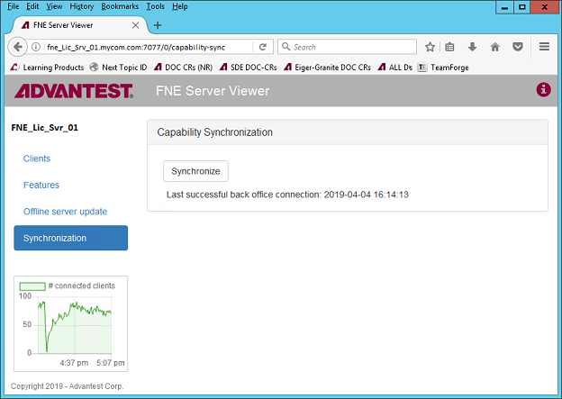

Activating system licenses
About this task
You use the Advantest License Portal to map the licenses to your license server.
Before you begin
Ensure that the license server has access to the Internet.
You need to have a login to the Advantest License Portal. If you are not able to login, get in contact with your Advantest representative.
Procedure
Results
The licenses are generated and the License Activation Result page is displayed, from which the following options are available:
- Download license - Download the license file for the newly generated licenses. If you still need to activate further licenses on the same license server, download the license file after completing all activations.
- Proceed with Simple Activation Enables you to activate the next license from the entitlement ID.
- Navigate to the Overview Page - Opens the License Management start page.
What to do next
For FlexNet Embedded license servers that are connected to the internet, you perform a
sync-fne-server action on the license server for immediate usage or wait
for the next automatic server synchronization.
Note The automatic server
synchronization is executed every 12 hours.
Alternatively, you can use the FNE Server viewer to activate the synchronisation of the licensing server.

Note If the FlexNet Embedded license server is not connected to the internet, you must download the
license container file and upload it to the FlexNet Embedded license server.
Functional changes
- Introduced before SmarTest 6.3.2